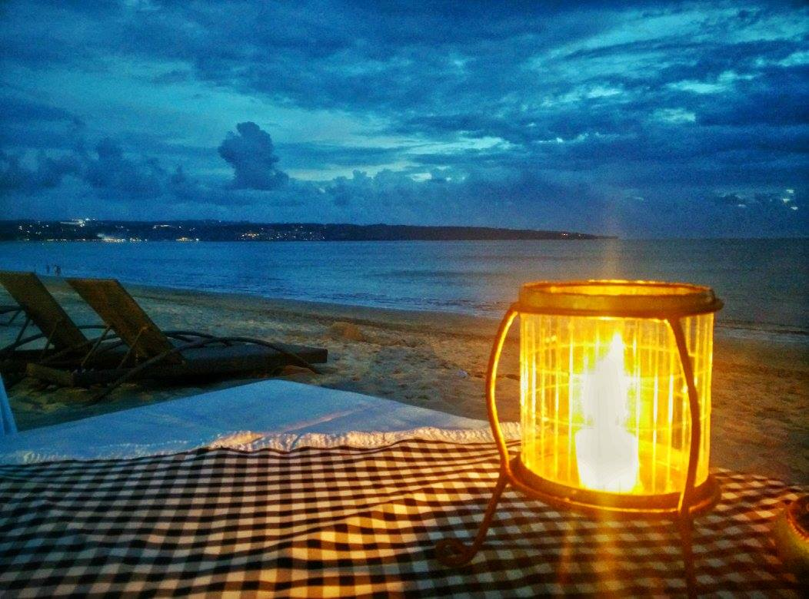

Photography - Kamrul Noor
Contemplation at Dusk

Amid the serene silence of a wintry landscape, a lone figure stands in reflection, where the vast sky meets the frozen expanse, contemplating the infinite possibilities that lie in the quiet moments of solitude.
Serenity on the Lake
Where water mirrors the sky and ancient temples whisper stories of old, every oar stroke stirs more than just the surface it stirs the soul, blending past and present in the serene waters of the lake.
Dance of the Dolphins
Amidst the playful waves, dolphins leap, celebrating the joy of the moment under the watchful eyes of enchanted onlookers a reminder that nature's ballet is open for all who seek its beauty.
Verdant Steps

In the heart of Bali, nature's greenery is crafted into magnificent terraces, each layer a step closer to the sky harmonizing the rhythm of life with the contours of the earth.
Twilight Whisper
As the sun kisses the horizon, its fading light whispers secrets to the waves, casting a golden glow that dances across the restless ocean a fleeting moment of serene beauty.
Harmony in the Sundarbans
In the dappled sunlight of the Sundarbans, deer roam freely, their patterns as intricate as the forest's own roots a serene symphony of life thriving in the world's largest mangrove sanctuary.
Crimson Tides

As the sun dips below the horizon, it paints the waters of the Sundarbans in shades of crimson and gold, leaving a trail of light for the weary sailor to follow home.
Evening Glow by the Shore
This title reflects the peaceful setting and the atmospheric lighting of the scene, enhancing the mood of the evening by the sea.